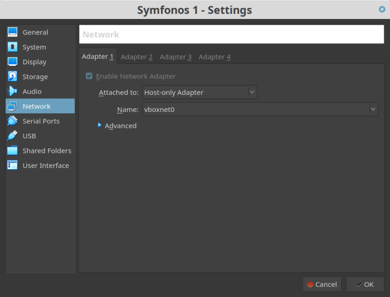
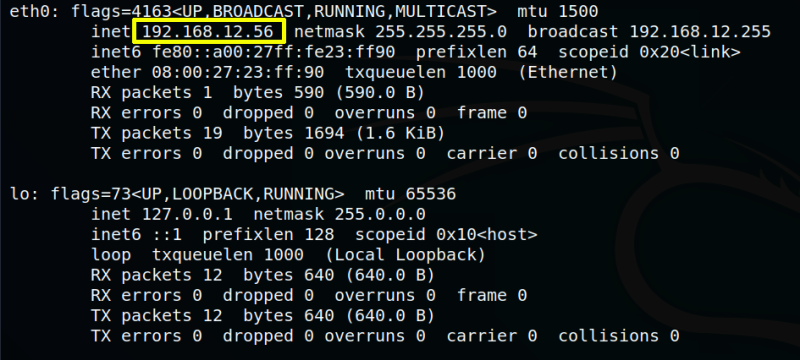
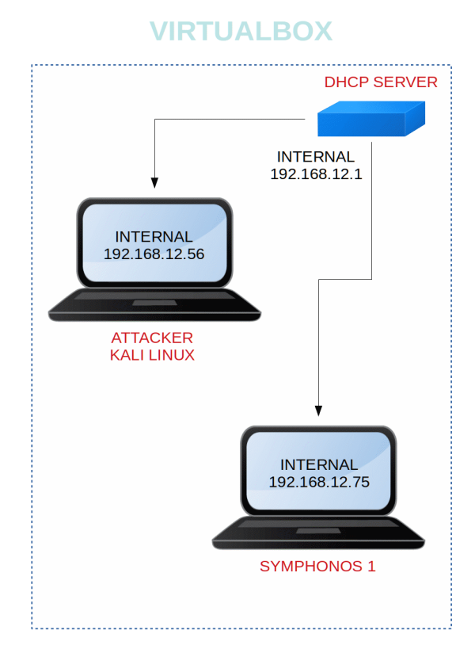

Symfonos 1
▸ Symfonos 1
▸ 1. Scan Network
▸ 2. Finding Services and Ports
▸ 3. Enumerate
▸ 3.1 Wpscan
▸ 3.2 LFI to RCE via SMTP log Poising
▸ 3.2 Netcat reverse connection
▸ 4. Privilege Escalation
▸ 4.1 Strings into a executable file
▸ 4.2 Export path for rouge curl
▸ 5. Catch the flag
Difficulty: Beginner to Intermediate.
Flag: 1 flag.
Learning:
• Netdiscover
• Nmap
• SMB Shares folder
• Wpscan
• Exploiting WordPress again LFI
• LFI to RCE via SMTP log Poising
• PATH Variable
• Catch the flag
• Download: https://drive.google.com/uc?id=1cb7qvWhdg8oyAQw43fm1ZMLjx2Jr3Ga-&export=download
• Download (Mirror): https://download.vulnhub.com/symfonos/symfonos1.7z
• Download (Torrent): https://download.vulnhub.com/symfonos/symfonos1.7z.torrent
Install the machine on VirtualBox:
1. Download the file and extract it.
2. On Virtualbox choose File->Import Appliance.
3. Select the file “ovf”.
4. Accept to import.


Watch your Machine IP.
Output:

Diagram
 Index
Index